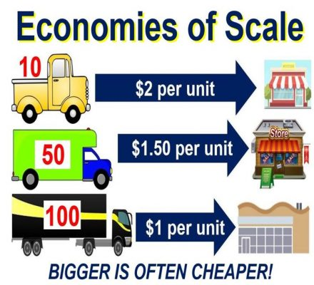
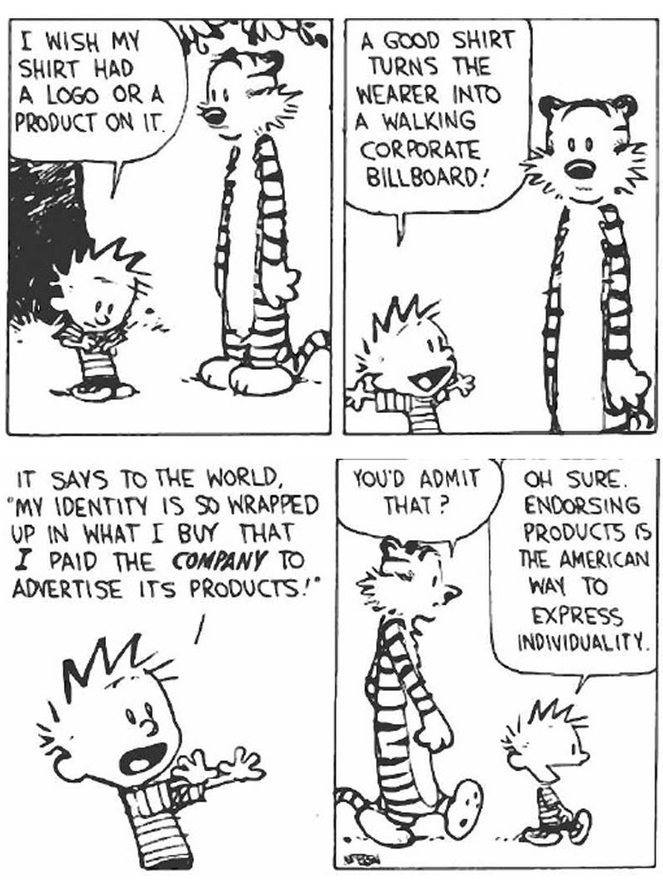

Related Issue 1 Vocab to Study!
This is what growth looks like:

Practice for Part A: What does this cartoonist believe about globalization?

Follow along with the Google Slide Presentation to complete the review booklet. The most IMPORTANT part of this review is the source analysis practice question at the end. You can also review the material in the green bar - Writing Guides - to prepare for the source analysis. For FEEDBACK from me, fill out this document -Copy of cartoon analysis.doc as practice for your Part A Source Analysis and share it with me. Your unit exam will have three sources to analyze and the guide will prepare you nicely!
Assignment: